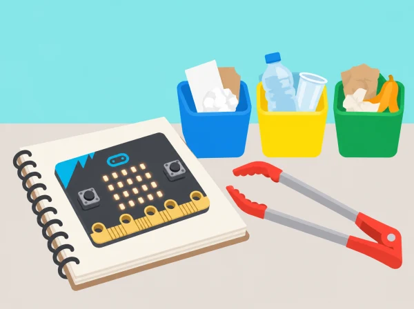

La brigada verda del centre vol saber quins tipus de residus nets apareixen més sovint en una zona del pati i proposar una millora de prevenció o separació. Els equips exploren botons, sensors i variables de micro:bit, dissenyen un comptador de categories i comparteixen les dades agregades. La situació adapta les dues lliçons oficials de *Barefoot · Litter hunt* amb un protocol de seguretat i registre propi.
BBC micro:bit, MakeCode, piles, targetes de categories, full de registre i residus nets de mostra. La unitat oficial requereix plaques físiques i alimentació; si la dotació no està disponible, feu servir una simulació identificada com a tal i conserveu l’activitat de recompte com a exercici de modelatge.
Recolliu programa d’icones, diagrama de la variable, prototip comptador, casos de prova, recompte agregat i una proposta justificada. Valoreu la precisió i facilitat d’ús, la detecció d’errors, la separació de categories i la prudència en les conclusions d’una mostra limitada.
No toqueu vidre, xeringues, piles, femta, objectes tallants, substàncies ni residus d’origen desconegut. No fotografieu persones, no anoteu noms i no associeu residus amb cap alumne. Renteu-vos les mans després de la pràctica, encara que només s’hagen usat mostres preparades.
Aquesta situació adapta les dues lliçons de micro:bit Barefoot · Litter hunt: ús de botons/sensors, icones, variables i joc d’entrada en la primera; disseny, programació i ús d’un comptador per registrar residus reciclables en la segona. El protocol de recollida segura, les categories, les proves i la proposta per al pati són propis.